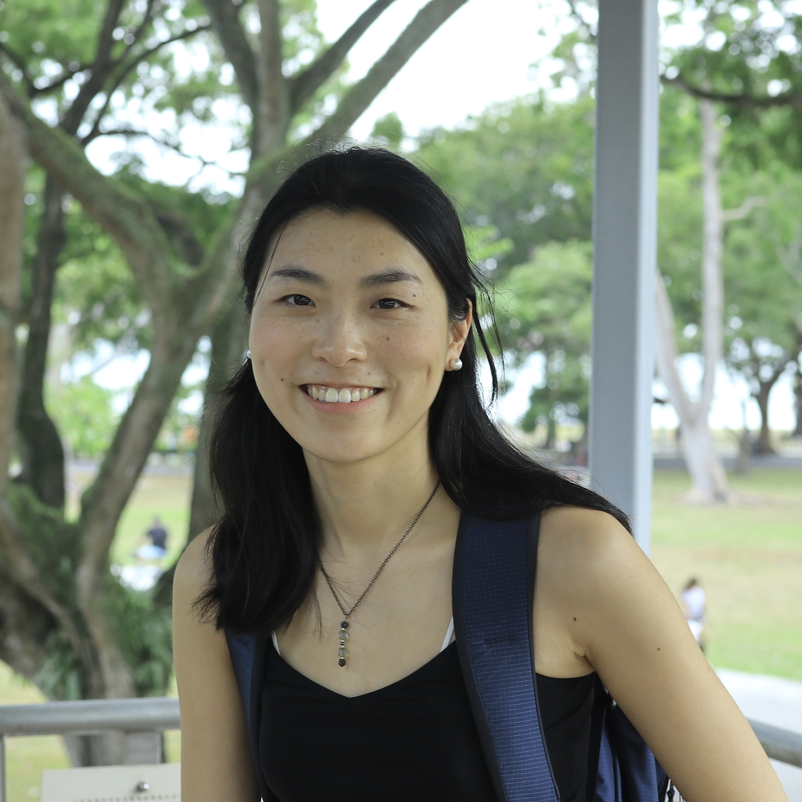

I am a Computer Science PhD candidate at Washington University in St. Louis, coadvised by Prof. Yevgeniy Vorobeychik and Prof. Gregory Kehne. My current research interests cover the foundations of AI (e.g., integrating learning and reasoning, and knowledge discovery) and collective decision making (e.g., AI alignment, and computational social choice).
I started out as a cognitive science student at the University of Edinburgh, with the passion to figure out how the mind works. While this curiosity has never diminished, it just happened that the beauty of maths struck me greatly. I ended up getting an MSc in pure maths at Imperial College London under my amazing advisor Prof. Paolo Cascini. My master's thesis was on algebraic geometry, inspired by a fantastic idea called "the periodic table of shapes". I have turned back to CS due to both its philosophical considerations and societal impact. Outside of research, you may find me reading, writing, watching films and plays, making art, or traveling.

C = conference, W = workshop, T = thesis. (α-β) denotes alphabetical author order.